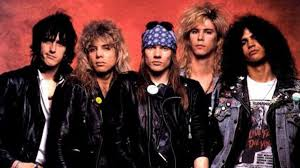
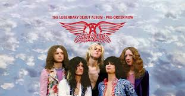
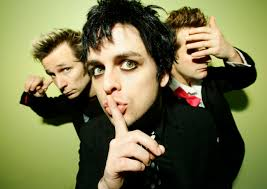

Bienvenidos a mi web donde muestro mis artistas favoritos.
Explora las secciones para descubrir más sobre ellos.

🎧 Escucha una muestra
en YouTube
🎧 Escucha una muestra
Ver en YouTube
🎧 Escucha una muestra
| Artistas | Década | Álbum | Premios |
|---|---|---|---|
| Guns N' Roses | 1980s | Appetite for Destruction | 1 Grammy |
| Aerosmith | 1990s | Get a Grip | |
| Green Day | 2000s | American Idiot | 5 Grammys |